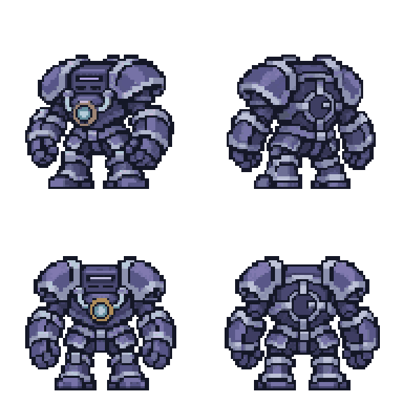
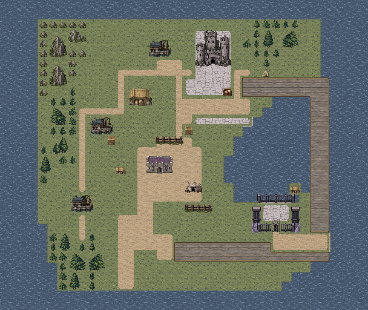

ELITE MECHANICAL PUPPET
伪泰坦傀儡
一台缓慢、重击、依靠胸口核心防护的军港傀儡。先拆核心，或承受反伤直接攻本体。
等级5 · 已接入数值
移动4／撤离7- 本体生命
- 42
- 核心耐久
- 16
- 力量
- 12
- 技巧
- 5
- 速度
- 1
- 幸运
- 0
| 本体状态 | 物防 | 魔防 | 反伤 |
|---|---|---|---|
| 核心完整 | 14 | 12 | 2HP |
| 核心破坏 | 4 | 2 | 无 |
重臂锤击：1格物理，威力14＝力量12＋固有攻击2，负重0，基础命中80%，攻速1，不新增远程手段。对物防5的示例友方造成9伤害。
核心独立物防3／魔防2，不享受自身＋10保护，攻击核心不触发反伤。破坏只解除防护与反伤，不降低本体攻击、生命和移动。
与本关首领生命34、攻击11相比，伪泰坦生命42、攻击14；速度明显更低。它是有弱点的非首领精英，不替代裴萨。

手机尺寸像素检查
原生尺寸／整数倍放大战斗主体约48逻辑像素高，约为普通士兵的1.5倍；地图主体约24逻辑像素高，占位仍为1格。矩形感应窗、厚肩甲与核心用成组像素表达，减少细碎铆钉与磨损。V2左右行走双腿交替；完整／破损地图待机均为枪兵同频的14／8／14／8帧，约0.73秒一轮。
完整／破损按钮会同步切换这三处。深浅底用于检查轮廓和核心；放大图不能替代手机实际尺寸验收。全游戏规则已写入根目录AGENTS及美术约定。
选择攻击本体或防护核心
核心有效本体
防护核心
- 友方生命
- 24 / 24
- 防御
- 5
- 累计反伤
- 0HP
这是一次攻击的固定结果演示，不自动加入反击或追击。实际命中率与攻击次数仍沿用现行规则；合法攻击后的固定反伤独立结算，不会变成额外挥拳、必杀或反伤连锁。现行普通伤害保底1，未命中扣0。
经验基础价值70
机械傀儡×1.5先按现行友方职业、等级及伤害公式计算普通值，再×1.5向上取整，最后全敌军统一封顶180，不在倍率前按100截断。已有80经验再得180，可连续升2级并保留60经验；不是固定拿105经验。核心破坏无击杀奖，逃脱无击败经验，已得伤害经验保留。这里只观察公式，不安排其它章节投放。
机械傀儡公共撤离规则
移动4同阵营在场存活战斗单位全部为机械傀儡时移动＋3，4→7，不叠加。每个本方回合沿合法路径撤离；核心破坏不取消这项特性。最近外缘按通路代价选取，不穿墙、不穿占位或瞬移，F25不增加下水能力。
本例逐回合撤离独立于关卡结算：原胜利条件满足时立即过关，不增加追赶回合。移动受合法路径与占位限制；出现非机械友军后恢复普通移动与行为。
第二章F25 · 潮狩军港
拟新增1只 · 15→16敌军
伪泰坦
零起算(18,9)，即第19列第10行。放在主楼旁的宽通路，保留侧路和接近核心的空间，不堵死唯一入口。
在F21水猴之后引入防护型精英。完整核心适合展示“正面消耗”和“先拆弱点”的差别；低速、移动4给玩家调整站位的余地。
保留原目标：击败裴萨、打开引航者牢房并取回神教箱。既有敌人、NPC与物品位置保留；无需击败伪泰坦才能完成原目标。
这里只给出F25单只草案，不修改当前关卡文件，也不安排后续章节。底图带2格展示边距，标记按34×28逻辑地图登记。标记会随上方撤离示例移动，重置可回到已投放起点。
本轮规则口径
“被攻击后”
本体每次被合法直接攻击后固定反伤2HP，命中、未命中都触发；不会按伤害比例增加。攻击核心无反伤。非法目标、射程不足和取消操作不触发。
核心破坏即时生效
伤害只扣所选血条，无传导、无溢出。核心破坏立即取消本体双防＋10和反伤；后续追击仍锁定原部位，已破坏则取消，不转打本体。
反伤边界
远程攻击本体仍有固定反伤。反伤能使友方归零；致命攻击按出手前核心状态结算一次，可以同时倒下。不递归触发反伤，也不新增武器反击。
其它伤害
毒与场景持续伤害不触发反伤。MAP只伤本体，每次释放对该目标只触发一次；不按格数重复反伤，不伤及核心。已按此规则接入运行代码。